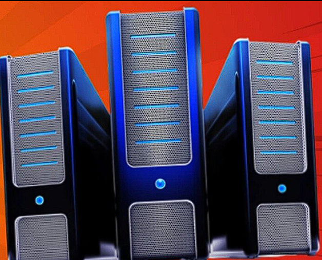

Computers have revolutionized modern life, serving as indispensable tools in a variety of fields, including business, education, healthcare, and entertainment. Over time, they have evolved into several distinct types, each designed to meet specific computational and operational needs. These types include supercomputers, mainframe computers, mini computers, servers, workstations, and microcomputers. Each type is characterized by its unique attributes, such as processing speed, memory capacity, energy efficiency, and suitability for particular tasks or industries.
This study provides a detailed comparison of these computer types, emphasizing mini computers, microcomputers, workstations, and servers. By examining their specifications, calculating power, energy consumption, and practical applications, the study aims to highlight how each type addresses specific computational demands. Through this analysis, readers can better understand the functionality and roles of these computers in both professional and personal contexts.
Computers differ in capabilities and uses, making them suited to specific tasks. Mini computers, or mid-range systems, are less powerful than mainframes but more capable than microcomputers. They are used in business for managing databases and scientific computations. Microcomputers, or PCs, are affordable and widely used for individual tasks but have lower processing power and memory. Workstations are high-performance systems for technical applications like 3D rendering and simulations, while servers manage resources, host applications, and handle multiple network requests. Each type serves unique roles, from personal use to enterprise operations.
| Types of Computers | Name/Brand | CPU | Memory | Processing Speed | Calculating Power | Working Principle | Energy Consumption | Field of Use |
|---|---|---|---|---|---|---|---|---|
| Supercomputer | IBM Summit | Multi-core processors | 1+ PB | 200+ petaflops | High FLOPS | Parallel processing | High | Weather forecasting, scientific research, and nuclear simulations |
| Mainframe Computers | IBM Z Series | Multi-core processors | TB-scale memory | Several GIPS | High processing power | Batch processing and multitasking | Medium | Banking, healthcare, and large-scale transaction processing |
| Mini Computers | PDP-8 | Multi-core processors | GB-scale memory | Moderate speed | Moderate FLOPS | Time-sharing and resource allocation | Medium | Small business operations and data management |
| Server | Dell PowerEdge | Multi-core processors | High-capacity | High | Server-level FLOPS | Manages network resources and databases | Medium to High | Web hosting, cloud services, and enterprise applications |
| Workstations | HP Z Series | High-speed multi-core CPUs | 16-64GB RAM | High-speed processors | High precision | Real-time multitasking and simulation | Medium | Engineering simulations, video editing, and scientific analysis |
| Micro Computers | Dell Inspiron | Consumer-grade processors | 8-16GB RAM | Moderate speed | Moderate FLOPS | Single-user applications | Low | General-purpose computing for home, school, and office use |
| Type | Sample Image | Description | Usage |
|---|---|---|---|
| Supercomputer | High-performance for complex tasks | Weather forecasting and simulations | |
| Mainframe Computers | Large-scale data processing | Banking and financial services | |
| Mini Computers | Small and mid-level task processing | Database management for small businesses | |
| Server | Designed for network and resource hosting | Web hosting and cloud computing. Also used in various industries and organizations, including businesses, government agencies, educational institutions, and web hosting companies | |
| Workstations |  | High precision for technical tasks | Primarily used by an individual for specialized tasks that require significant processing power and resources. It is designed to provide the user with a powerful and efficient platform for demanding work, such as graphic design, video editing, engineering simulations, and scientific research |
| Micro Computers | Standard computers for general use | Personal computing and office tasks |
| Type | Processing Speed | Memory Capacity | Power Consumption | Usage |
|---|---|---|---|---|
| Mini Computer | Moderate | GB-scale memory | Medium | Business operations |
| Micro Computer | Low to Moderate | 8-16 GB | Low | Home, school, and office tasks |
| Workstation | High | 16-64 GB | Medium | Specialized tasks like 3D modeling |
| Server | High | High-capacity memory | Medium to High | Resource management and web hosting |